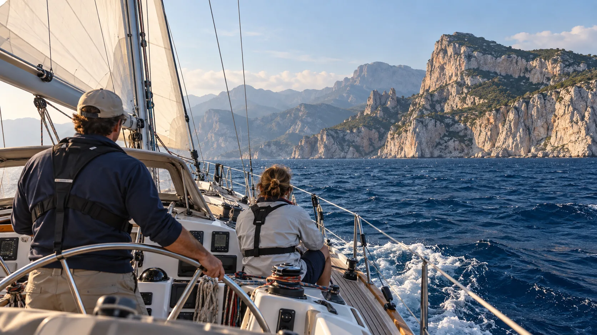

28 сентября – 11 октября 2026 · 14 дней · 650 € / место

От итальянского побережья — к Балеарским островам. Переход сочетает дни под парусом и остановки, во время которых можно выйти на берег и познакомиться с островами. Конкретные заходы и время в море капитан определяет с учётом погоды.
Выход из Остии вдоль тосканского побережья. Малый остров Джильо — природный заповедник.
Бастия, Кальви, Бонифачо на скалах. Французская кухня, горы, бухты.
Коста Смеральда, Порто-Черво, залив Ольбия. Катание на SUP в марине.
Маон — один из крупнейших естественных портов в мире. Бирюзовые бухты юга.
Короткий переход в Пальма-де-Майорка. Готический собор, старый город, тапас.
650 € за место в двухместной каюте. Дополнительно оплачиваются марины (0–150 €/ночь, делится на всех) и топливо (максимум 300 € на переход, делится на всех). Скидка 10% при раннем бронировании (за 6 месяцев) и парам.
Для бронирования напишите капитану в Telegram — он подберёт удобные даты и расскажет подробнее обо всех деталях перехода.